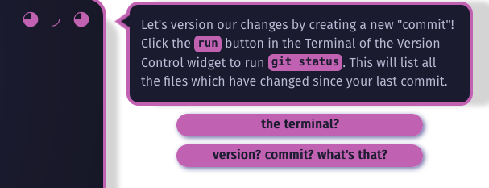
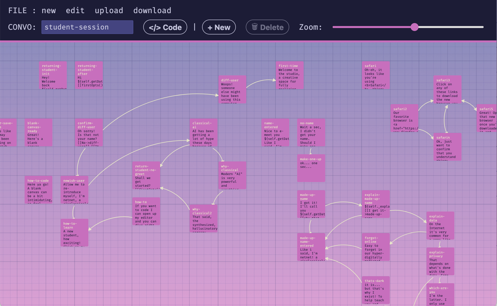
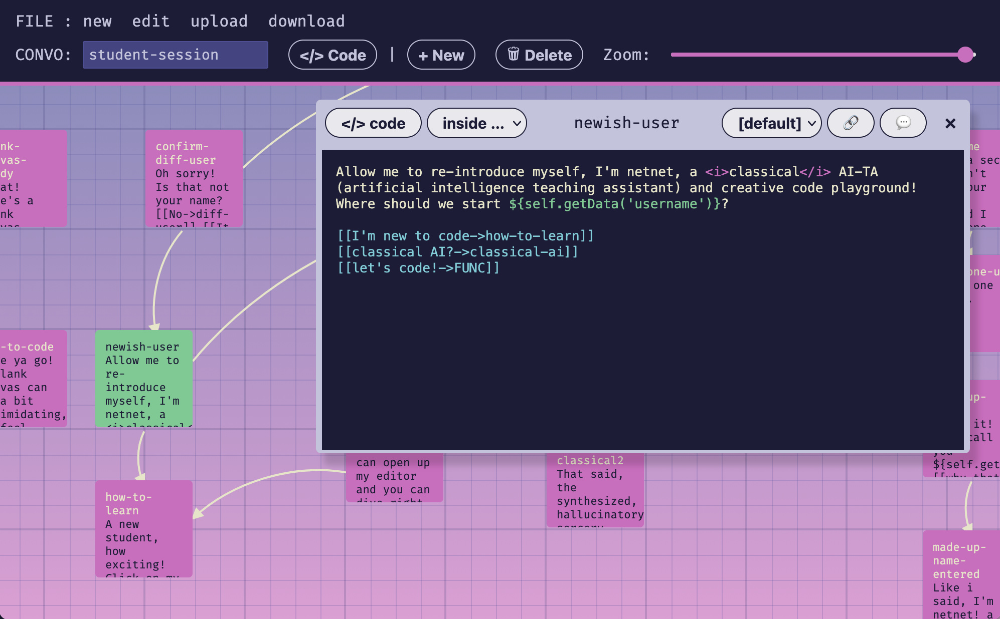
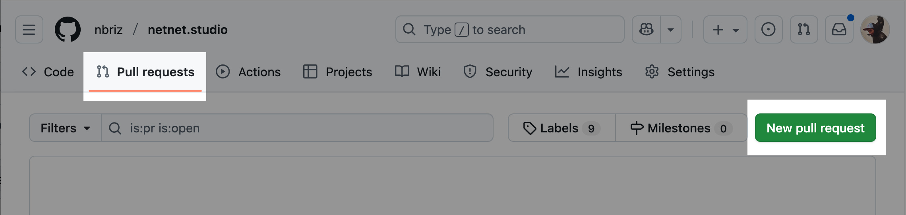
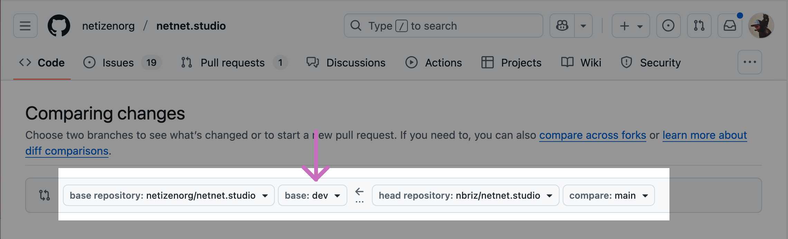

In these docs we'll explain how to edit "passages" (netnet's speech bubbles) as well as how to create new "convos" (a collection of passages associated with a specific widget). These docs assume you've already done the following steps covered in the prior section of The Docs:
If you're an experienced open source developer and have already setup a local development environment, you can alternatively create and/or edit these files in your code editor, refer instead to the Convo System docs.
We consider netnet an AI-TA (artificial intelligence teaching assistant), meaning it is not a teacher but rather a system designed to assist in educational contexts. Another point worth clarifying is that netnet's AI system is not a neural-network (like a large language model) which synthesizes text based on statistical probabilities (which may or may not be factually accurate); netnet has a classical AI system, meaning everything it says is the result of a rule-based system pulling from an internal database written/coded by hand. You could call it an "expert system", the diagram below is a very high-level map of this system.
╔════════════════════╗ ┌────────────────────────────────────┐ ║ within the netitor ║━┳━►│ friendly error system │ ╚════════════════════╝ ┃ ├╌╌╌╌╌╌╌╌╌╌╌╌╌╌╌╌╌╌╌╌╌╌╌╌╌╌╌╌╌╌╌╌╌╌╌╌┤ ▲ ┃ │ 3rd party linters: HTML + CSS + JS │ ┆ ┃ │ validate HTML + CSS (selectors) │ ╭───────╮ ┃ | friendly translate lint errors │ │ ◕ ◞ ◕ │ ┃ | synonym check + spell check │━━┓ └───────┘ ┃ └────────────────────────────────────┘ ┃ ┆ ┃ ┌──────────────────────────────────┐ ┃ ┆ ┗━►│ dbl-click edu info | ┃ ┆ ├╌╌╌╌╌╌╌╌╌╌╌╌╌╌╌╌╌╌╌╌╌╌╌╌╌╌╌╌╌╌╌╌╌╌┤ ┃ ┆ │ database of HTML + CSS + JS info | ┃ ┆ | (HTML elements, CSS props, etc) |━━┓ ┃ ┆ └──────────────────────────────────┘ ┃ ┃ ┆ ┃ ┃ ┆ ┌─────────────────────────────┐ ┃ ┃ ┆ ┏━►│ www/core/utils-convo.js │ ┃ ┃ ▼ ┃ └─────────────────────────────┘ ┃ ┃ ╔══════════════════════╗ ┃ ┌──────────────────────────────────┐┃ ┃ ║ within netnet.studio ║━╋━►│ widget system │┃ ┃ ╚══════════════════════╝ ┃ ├╌╌╌╌╌╌╌╌╌╌╌╌╌╌╌╌╌╌╌╌╌╌╌╌╌╌╌╌╌╌╌╌╌╌┤┃ ┃ ┃ │ www/widgets/{lang}-reference/ ┏━━━┛ ┃ ┃ │┌──────────────┴───────────────┸─┐│ ┃ ┃ ││{html}/data/edu-supplement.json ││ ┃ ┃ ││{css}/data/edu-supplement.json ││ ┃ ┃ ││{js}/data/edu-supplement.json ││ ┃ ┃ │└────────────────────────────────┘│ ┃ ┃ │ www/widgets/{*}/convo.js │ ┃ ┃ │ www/widgets/code-review/index.js ◀━━┛ ┃ │ ./convo.js │ ┌────────────────────┐ ┃ │ www/widgets/{*}/convo.js │ │ Annotated Demos │◀━━┻┓ │ www/widgets/{*}/convo.js │ │ /data/demos/*.json │ ┃ │ etc... │ └────────────────────┘ ┃ └──────────────────────────────────┘ ┌─────────────────────────▼──┐ │ Guided Templates │ │ /data/templates/*/convo.js │ └────────────────────────────┘
| Repo | location | details |
|---|---|---|
| netitor | src/linters | all the logic/data files for netnet's friendly error messages. NOTE netnet's error messages are sometimes augmented by the code-review widget. |
| netitor | src/edu-data | all the logic/data files for netnet's double-click code-info, these should be edited using netitor's copy editor, review these docs. NOTE netnet's edu info are sometimes augmented by the html/css/js-reference widgets and their corresponding data/edu-supplement.json files. |
| netnet.studio | data/demos | any passage appearing as part of an Annotated Demo walkthrough can be found in that demo's json file. |
| netnet.studio | data/templates | any passage appearing as part of a Guided Template walkthrough can be found in that template's convo.js file. |
| netnet.studio | www/widgets | any passage appearing as part of interacting with a particular widget can be found in that widget's convo.js file. NOTE: all of these files can be edited using the Convo Maker widget (explained below). |
| netnet.studio | www/core/utils-convo.js | any other miscellaneous passages will likely be found in the utils-convo.js. |
There are over 164,000 words of dialogue in netnet, it's not uncommon to come across passages that could use some editing. Maybe you noticed a type-o in one of netnet's passage, or maybe you just think there's something that could be worded in a clearer way. In any case, the first step is finding that passage in the code base. The "expert system" dialogue above provides a general map with links to the different parts of the code base where netent's passages live.
The easiest way to find a passage in netnet's code base is by using your GitHub's repo search bar to find the file that contains the line of dialogue you're trying to edit. We recommend placing your search withing quote marks " " to limit the search results to match the exact phrase. However, If you type the entire quoted passage into the GitHub search bar you might not be able to find it, this is because the way the passage appears in the code may not exactly match what you see in netnet, consider this example:

This passage contains a couple of pink code blocks, this is because the passage contains markup, in this case <code> tags around the words "run" and "git status". Additionally, because most of the passage's text are stored as JavaScript strings in the code, often when a word has an apostrophe like the first word in this passage, "Let's" it needs to be escaped in the code, which means it actually looks like this: Let\'s. Here is how that passage actually appears in netnet's code:
content: 'Let\'s version our changes by creating a new "commit"! Click the <code>run</code> button in the Terminal of the Version Control widget to run <code>git status</code>. This will list all the files which have changed since your last commit.',For this reason it's best to search for small snippets of text from a passage and avoid including any of the marked-up text (like code blocks and links) as well as any text with apostrophes in it.
You could theoretically edit the convo.js file directly on GitHub, just like you do with the docs, but since these are .js files (not .md files) the stakes are a little higher. For example, if you make a "syntax error" in JavaScript (like forgetting the \ before any apostrophes) it might not be immediately obvious on GitHub and thus could cause an error in the convo logic. It's also difficult to understand which passages connect to which other passages when viewing them in these linear JavaScript files. For these reasons we've created a special widget in netnet called the Convo Maker which is used to create and edit these convo files.
To find it, search for "Convo Maker" in netnet's search bar. The widget should open up in it's own pop-up window (outside of netnet), it will be empty by default, but you can click on the "edit" button in the menu to find the specific convo.js file you're looking for and open it.

The Convo Maker displays all the passages in a conversation file on a two-dimensional grid, with connections between them illustrating which passages link to others. You can use the trackpad to scroll around in the space and can also pinch-to-zoom (or use the zoom slider) to zoom in/out. Clicking on a passage selects it, after selecting on a passage you can move it around or delete it. To edit a passage you must double-click it.

This will open up a passage window, there you can edit the text and have the option to write HTML markup and call JavaScript functions.
<i>classical</i> for example, written inside the <i> element${...} syntax to call upon JavaScript functions which return text. In the screen shot above we're calling ${self.getData('username')} which will display the specific user's name. Here "self" refers to the current widget whose convo we're editing. In this particular case we're editing the Student Session Data widget which has a getData() method which can be used to call on any locally saved data. Another common use of the ${...} JavaScript syntax in these passages is ${utils.hotKey()} which will display "CMD" for Mac users or "CNTRL" for Windows and Linux users.To preview your changes you can press the 💬 button on the top right of the passage window, this will display the current passage in netnet.studio so you can review how it will appear in-situ and make sure all the HTML and JS works correctly.
Below the passage's content you define what options (the user choices) should appear along side it by writing the options within [[ ]] brackets. An option starts with the text you want to display in it, for example "I'm new to code" followed by an arrow -> and the the name of the passage you want to link to, for example "how-to-learn", together that would be written like this: [[I'm new to code->how-to-learn]]
If you want an option that will simply close the passage, rather than link to another one, you can write "HIDE" in place of the name of another passage, for example [[got it!->HIDE]]
At times you might come across options that point to "FUNC", this is short for "function" and means that this option will run a custom function when selected (more on that below)
Most of the time you'll likely only need to edit a passage's text or options, but on occasion there are passages that may need other details addressed. Below you'll find info on all the other editable details as they appear from right-to-left in the passage window:
The last part of the Convo Maker's interface worth discussing are the two </> code buttons. Both of these open up a code editor, but they each edit different parts of the convo's code. A convo doesn't need to have any special code defined, this is optional when a convo file or specific passage requires some special behavior.
The </> code button in the main menu (next to the convo's name) is the global code editor, here you can define any variables or functions that you want to use in any (or multiple) passages. For example, you can create a variable called time that is then referenced in different passages using the ${time} syntax discussed before. Or you could make a function that returns a string and call it in a passage the same way ${specialString()}, in some convos there are special functions defined which create custom options object, like the firstOpts() function in the Student Session convo, this can then be called inside a single option like [[firstOpts()]]
The </> code button which appears in the passage's menu is used to edit code for different aspects of the passage. You can specify what part of the passage's code you want to edit by updating the drop-down next to it before clicking the button. Here are the different parts of the passages code you may want to edit:
WIDGET['name'].close() or run some other action before the passage appears.NNW.menu.switchFace('error') or run some other action after the passage appears.[[let's code!->FUNC]], this will automatically add an item to the drop down list below the last one with the prefix OPT: followed by the options text, for example OPT:let's code. Selecting it and clicking the </> code button will allow you to write a custom function to run if/when the user selects this option. Keep in mind that if you don't include a call to e.goTo() (to link to another passage) or e.hide() within you function, then the passage will remain visible even after the student selects this option. Below is an example of what this custom option function might look like:const LINK = (e) => {
self._wantsColor = true
WIDGETS.open('color-widget')
e.hide()
// or e.goTo('passage-id')
}When you're finished working on the passage, or simply want to save your changes locally, you can click the download button in the main menu. This will download a file called convo.js with all of the conversion data (all the passages, options, code, etc). When you want to keep working on that convo later you can visit netnet.studio, open the Convo Maker widget and click upload to load up the convo.js file you downloaded and had been previously working on.
As discussed in the section which covers editing these Docs themselves, when you want to share any updates/changes you've made with us you'll need to create a "pull request" on GitHub, letting us know that there are some updates in your "fork" ready for us to review and considering merging into netnet's main code base. But before you do that, you'll need to include these changes in your fork:
www/widgets folder, or maybe that's a specific template in the data/templates folder.convo.js fileThen, to create a new PR click on the "Pull requests" tab in the top menu and then the green New pull request button

On the next page make sure that the repo listed on the right side of the arrow is yours (yourname/netnet.studio) and on the left side of the arrows is ours (netizenorg/netnet.studio). The arrow between the repos should be pointing from your fork and to ours.

⚠️ NOTE: Updates to convos are something we'll want to test on our dev server before deploying to the main public server, for this reason you'll want to make sure to select base: dev next to the netizenorg/netnet.studio repo, so that the request comes to our dev branch and not our main branch. The branch selected next to your forked repo should be whichever branch you committed this new change to (likely your main).
Once the PR (pull request) is open we'll get a notification to review your request. If we notice any issues or have any feedback for you, we'll leave a comment on the PR page with instructions. If it's not clear you can respond to us and we can start a conversation on the PR page. Once you've addressed our feedback you won't need to create another PR, any time you commit a new change it will automatically get added to the open PR. When those changes are ready for us to re-review, simply leave a comment on the PR letting us know!
Once we accept and "merge" your pull request, the PR page gets closed and you'll officially become a contributor to netnet.studio!